리눅스마스터-1급 (2014-03-08 기출문제)
1과목: 리눅스 실무의 이해
1. 다음 중 페이지 대체 알고리즘에 대한 설명으로 틀린 것은?(오류 신고가 접수된 문제입니다. 반드시 정답과 해설을 확인하시기 바랍니다.)
- FIFO : 먼저 적재된 페이지를 제거한다.
- LRU：최근에 가장 적게 사용된 페이지를 제거한다.
- LFU：가장 오랫동안 사용되지 않을 페이지를 제거한다.
- NUR：최근에 사용하지 않은 페이지를 제거한다.
(정답률: 60%)

2. 다음 중 모바일 기기에서 사용되는 리눅스 운영체제로 틀린 것은?
- Android
- LiMo
- Bada
- ChromeOS
(정답률: 71%)
3. 자유 소프트웨어(Free Software)를 충족시키는 조건을 모두 고른 것으로 알맞은 것은?
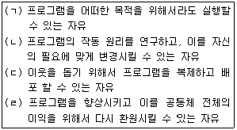
- (ㄱ), (ㄴ)
- (ㄱ), (ㄴ), (ㄷ)
- (ㄱ), (ㄷ), (ㄹ)
- (ㄱ), (ㄴ), (ㄷ), (ㄹ)
(정답률: 76%)
4. 다음과 같이 커널 버전이 확인 되었을 때, 아래의 설명에 해당하는 숫자로 알맞은 것은?
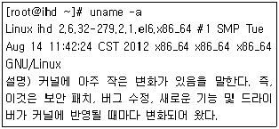
- 2
- 6
- 32
- 279
(정답률: 66%)
5. 다음에서 설명하는 리눅스 배포판으로 알맞은 것은?
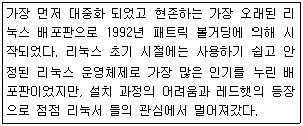
- Debian GNU/Linux
- SuSE linux
- Ubuntu
- Slackware
(정답률: 63%)
6. SCSI의 특징으로 틀린 것은?
- SCSI는 호환성이 뛰어나다.
- SCSI는 직렬 인터페이스다.
- SCSI는 고성능이다.
- SCSI는 확장성이 뛰어나다.
(정답률: 73%)
7. 다음에서 설명하는 리눅스 디렉토리로 알맞은 것은?
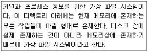
- /lost+found
- /var
- /home
- /proc
(정답률: 72%)
8. 다음 중 reboot과 같은 명령어로 알맞은 것은?
- shutdown -r now
- shutdown -h now
- halt
- poweroff
(정답률: 75%)
9. 다음 중 슈퍼데몬의 서비스로 틀린 것은?
- telnet
- rsync
- pop3
- ssh
(정답률: 46%)
10. GNOME의 실행을 위해 “startx" 명령 입력시 오류가 발생할 경우 실행하여 설정하는 것으로 알맞은 것은?
- Xconfig
- Xfree86
- Xorg
- Xconfigurator
(정답률: 60%)
11. 셸 스크립트인 until.sh의 내용이 다음과 같을 때 명령 실행 결과로 알맞은 것은?
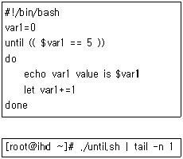
- var1 value is 1
- var1 value is 2
- var1 value is 3
- var1 value is 4
(정답률: 67%)
12. 다음과 같은 정보를 가지고 있는 파일로 알맞은 것은?
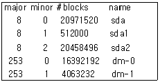
- /proc/diskstats
- /etc/diskstats
- /proc/partitions
- /etc/partitions
(정답률: 58%)
13. 다음 중 Shell에 대한 특징으로 틀린 것은?
- “echo $SHELL” 명령어를 통해 쉘(Shell) 변경이 가능하다.
- 사용자와 운영체제 간에 대화하는 중간 창구 역할을 수행한다.
- 사용 할 수 있는 쉘(Shell)들의 경로는 /etc/shells 파일에 설정되어 있다.
- 기본 쉘은 /etc/passwd파일 변경 후 리부팅하면 변경된 쉘(Shell) 사용이 가능하다.
(정답률: 67%)
14. 다음 중 run level을 재부팅 후에도 적용하기 위해 변경해야 할 파일로 알맞은 것은?
- /etc/fstab
- /etc/inittab
- /etc/mtab
- /etc/partitions
(정답률: 72%)
15. 다음 설명하는 파일 시스템으로 알맞은 것은?
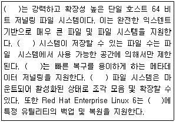
- ext4
- GlusterFS
- XFS
- ReFS
(정답률: 60%)
16. 다음에서 설명하는 것으로 알맞은 것은?
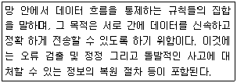
- 프로토콜
- 서비스 프리미티브
- 실체(Entity)
- 네트워크 계층
(정답률: 71%)
17. 다음 중 열려 있는 소켓들을 확인하기 위한 명령어로 알맞은 것은?
- netstat
- route
- ifconfig
- ping
(정답률: 73%)
18. dig 명령어 사용 시 다음과 같은 오류가 발생하였다. 다음 중 수정해야 할 파일로 알맞은 것은?
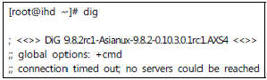
- /etc/named.conf
- /etc/host.conf
- /etc/resolv.conf
- /etc/nslookup.conf
(정답률: 64%)
19. 다음 중 ifconfig 명령으로 알 수 없는 항목으로 알맞은 것은?
- MAC address
- RX packets
- Duplex
- MTU
(정답률: 67%)
20. 회사에 192.168.163.0의 C 클래스 네트워크를 사용 중에 있다. 한 서브넷당 12개의 호스트가 있는 서브넷이 필요할 때, 사용해야 할 최적의 서브넷 마스크로 알맞은 것은?
- 255.255.255.248
- 255.255.255.240
- 255.255.255.224
- 255.255.255.192
(정답률: 63%)
2과목: 리눅스 시스템 관리
21. 다음 중 root 사용자의 정보에 대한 설명으로 틀린 것은?
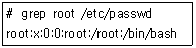
- root 사용자의 UID는 0이다.
- root 사용자의 GID는 0이다.
- root 사용자의 로그인 쉘은 /root 이다.
- root 사용자의 암호는 /etc/passwd 파일에 없다.
(정답률: 60%)
22. 다음과 같이 testuser 사용자가 추가된 경우에 대한 설명으로 틀린 것은?
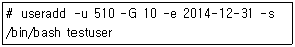
- testuser 사용자의 UID는 510 이다.
- testuser 사용자의 주 그룹(primary group)은 GID가 10 이다.
- testuser 사용자의 계정 사용 종료일은 2014년 12월 31일이다.
- testuser 사용자의 로그인 쉘은 /bin/bash 이다.
(정답률: 67%)
23. 다음 중 그룹에 대한 정보를 변경할 때 사용하는 명령어로 알맞은 것은?
- addgroup
- groupadd
- groupmod
- groupdel
(정답률: 76%)
24. 다음 중 usermod 명령어의 옵션에 대한 설명으로 틀린 것은?
- -e : 만기 일자를 지정하거나 변경한다.
- -s : 패스워드를 변경한다.
- -G : 부 그룹(secondary group) 설정을 지정 하거나 변경한다.
- -c : 사용자의 설명을 변경한다.
(정답률: 66%)
25. 다음 중 사용자 관련 명령어의 설명으로 알맞은 것은?
- passwd : 사용자 전환할 때 사용한다.
- chage : 암호를 변경할 때 사용한다.
- userdel : 사용자를 삭제할 때 사용한다.
- su : 파일의 퍼미션을 변경할 때 사용한다.
(정답률: 74%)
26. 다음 중 명령어 출력 결과의 해석으로 틀린 것은?
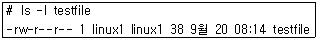
- -rw-r--r-- : 파일의 종류와 퍼미션
- 1 : 링크 수
- testfile : 파일명
- 38 : inode 번호
(정답률: 61%)
27. 다음 중 부팅 시에 파일시스템을 마운트하기 위한 설정 파일로 알맞은 것은?
- /etc/fstab
- /etc/mtab
- /etc/exports
- /etc/vfstab
(정답률: 70%)
28. 다음은 새로운 디스크를 추가한 후 사용하기 까지의 순서로 가장 알맞은 것은?
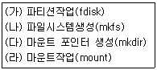
- (가) - (나) - (다) - (라)
- (나) - (가) - (라) - (다)
- (라) - (다) - (나) - (가)
- (다) - (나) - (가) - (라)
(정답률: 69%)
29. 다음 중 스왑 관련 명령어의 설명으로 알맞은 것은?
- swapoff : 스왑으로 사용할 파일을 생성한다.
- swapon : 스왑을 비활성화 한다.
- mkswap : 스왑 파일시스템을 만든다.
- dd : 스왑을 활성화 한다.
(정답률: 71%)
30. 다음 중 “fdisk /dev/sdb" 입력 후 사용하는 명령에 대한 설명으로 알맞은 것은?
- d : 새로운 파티션을 생성한다.
- t : 파티션의 시스템 아이디(partition's system id)를 변경한다.
- q : 파티션을 삭제한다.
- w : 메뉴를 출력한다.
(정답률: 49%)
31. 다음 중 운영체제 런레벨(runlevel) 대한 설명으로 알맞은 것은?
- 런레벨 0 : 재부팅
- 런레벨 1 : 셧다운
- 런레벨 3 : 싱글 유저 모드
- 런레벨 5 : 멀티유저 모드, 그래픽 모드
(정답률: 58%)
32. 다음 중 백그라운드 프로세스를 확인할 때 사용 하는 명령으로 알맞은 것은?
- fg
- bg
- jobs
- kill
(정답률: 59%)
33. 다음 중 현재 실행 중인 프로세스를 트리(tree) 구조로 보여 주는 명령어로 알맞은 것은?
- pstree
- jobs
- pkill
- top
(정답률: 72%)
34. 다음 중 프로세스 관련 명령어의 설명으로 틀린 것은?
- renice : 실행중인 프로세스의 우선순위를 조정한다.
- nice : 프로그램을 실행할 때 우선순위를 조정한다.
- top : 시스템의 전반적인 운용상황을 실시간으로 모니터링하거나 관리한다.
- nohup : 사용자가 로그아웃하면 해당 프로세스가 종료되도록 할 때 사용한다.
(정답률: 65%)
35. 다음 중 crontab 명령어 사용 시 사용자 접근 제어 파일로 알맞은 것은?
- /etc/cron.d/cron.allow, /etc/cron.d/cron.deny
- /etc/cron.allow, /etc/cron.deny
- /etc/crond/cron.allow, /etc/crond/cron.deny
- /etc/hosts.allow, /etc/hosts.deny
(정답률: 44%)
36. 다음 중 rpm 명령어를 이용하여 ftp 서버의 패키지를 설치할 때 사용하는 명령으로 알맞은 것은?(단, 다음과 같은 조건을 만족해야 한다.)
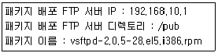
- rpm -a ftp://192.168.10.1/pub/vsftpd-2.0.5-28.el5.i386.rpm
- rpm -f ftp://192.168.10.1/pub/vsftpd-2.0.5-28.el5.i386.rpm
- rpm -i ftp://192.168.10.1/pub/vsftpd-2.0.5-28.el5.i386.rpm
- rpm -ftp ftp://192.168.10.1/pub/vsftpd-2.0.5-28.el5.i386.rpm
(정답률: 61%)
37. 다음 중 rpm 명령어를 사용하여 httpd 패키지의 의존성을 검사하지 않고 삭제하는 명령어 형식 으로 알맞은 것은?
- rpm --nodeps -x httpd
- rpm --nodeps -e httpd
- rpm --nodep -x httpd
- rpm -nodep -e httpd
(정답률: 61%)
38. 다음 중 yum을 사용하여 현재 시스템에 설치된 패키지 목록만을 확인 명령으로 알맞은 것은?
- yum list install
- yum list installed
- yum list available
- yum available list
(정답률: 59%)
39. 다음 중 괄호 안에 들어갈 단어로 알맞은 것은?
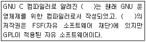
- COBOL
- JAVA
- Fortran
- GCC
(정답률: 68%)
40. 다음 중 인터넷상에 받은 소스 프로그램인 httpd-2.4.7.tar.bz2 파일의 압축을 해제하는 방법으로 알맞은 것은?
- tar xvjf httpd-2.4.7.tar.bz2
- tar xvzf httpd-2.4.7.tar.bz2
- unzip httpd-2.4.7.tar.bz2
- uncompress httpd-2.4.7.tar.bz2
(정답률: 51%)
41. 다음 중 커널 컴파일 옵션 설정 작업을 위한 명령어로 알맞은 것은?
- make option
- make modules
- make bzImage
- make menuconfig
(정답률: 52%)
42. 다음 중 모듈 사이의 의존성을 검사하여 modules.dep 파일을 생성하는 명령어로 알맞은 것은?
- depmod
- modprobe
- lsmod
- rmmod
(정답률: 46%)
43. 다음 중 /dev/sda1를 /ihd 디렉토리에 마운트하는 명령어로 알맞은 것은?
- mount /dev/sda1 /ihd
- umount /dev/sda1 /ihd
- fdisk /dev/sda1 /ihd
- eject /dev/sda1 /ihd
(정답률: 68%)
44. 프린터의 작업 상태를 확인 할 수 있는 명령어로 알맞은 것은?
- lpr
- lp
- lpq
- lprm
(정답률: 54%)
45. 하드디스크를 추가하여 마운트하여 사용한 후에 재부팅하였으나 마운트가 되지 않았다. 다음 중 부팅시 자동으로 마운트가 되도록 설정하는 파일로 알맞은 것은?
- /etc/inittab
- /etc/auto.master
- /etc/mountd.conf
- /etc/fstab
(정답률: 62%)
46. 다음 명령의 결과와 같을 때 현재 커널의 모듈이 설치되어 있는 디렉토리로 알맞은 것은?
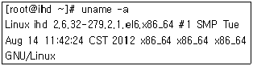
- /lib/modules/2.6.32-279.2.1.el6.x86_64
- /lib/modules/2.6.32-279
- /lib/2.6.32-279.2.1.el6.x86_64
- /lib/2.6.32-279
(정답률: 59%)
47. 다음 중 제거하려는 모듈이 의존성에 의하여 제거되지 않는 경우에 사용하는 모듈 제거 명령으로 알맞은 것은?
- modprobe -v
- modprobe -r
- rmmod
- insmod
(정답률: 55%)
48. 다음 중 리눅스 주변기기와 응용프로그램의 연관으로 틀린 것은?
- 프린터 - CUPS
- 스캐너 - SANE
- 사운드 카드 - ALSA
- 비디오 카드 - OSS
(정답률: 54%)
49. 새로운 하드 디스크(/dev/sdc1)를 장착하여 mke2fs -j /dev/sdc1 이라는 명령어를 이용하여 생성하였다. ( 괄호 )에 들어갈 Type으로 알맞은 것은?
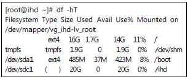
- ext2
- ext3
- ext4
- nfs
(정답률: 47%)
50. /boot의 ext3 파일 시스템에 이상증상이 보여 다음과 같이 확인하였다. 다음 ( 괄호 )안에 들어갈 확인 명령어( (ㄱ) )와 해결하기 위한 명령어 ( (ㄴ) )로 알맞게 짝지어 진 것으로 알맞은 것은?
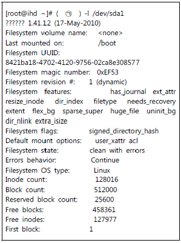
- (ㄱ) : tune2fs (ㄴ) : fsck.ext3
- (ㄱ) : tune2fs (ㄴ) : mk2fs
- (ㄱ) : sosreport (ㄴ) : fsck.ext3
- (ㄱ) : sosreport (ㄴ) : mk2fs
(정답률: 40%)
51. 다음 중 리눅스 관련 로그 파일에 대한 설명으로 알맞은 것은?
- /var/log/wtmp : 현재 로그인한 사용자정보만기록
- /var/log/secure : 사용자의 마지막 로그인 기록
- /var/log/cron : 사용자들의 로그인/로그아웃 기록
- /var/log/dmesg : 시스템이 부팅할 때 보이는 시스템 정보 메세지 기록
(정답률: 52%)
52. 다음 중 syslogd 데몬이 사용하는 설정 파일로 알맞은 것은?
- /etc/syslogd.conf
- /etc/syslog.conf
- /etc/sysconfig/syslog.conf
- /etc/sysconfig/syslogd.conf
(정답률: 33%)
53. 다음 중 ( 괄호 )안에 들어갈 설정 파일이름으로 알맞은 것은?
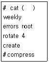
- /etc/syslog.conf
- /etc/logrotate/syslog.conf
- /etc/logrotate.conf
- /etc/logrotate/logrotate.conf
(정답률: 47%)
54. 다음 ( 괄호 )안에 들어갈 말로 알맞은 것은?
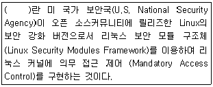
- SELinux
- PAM
- iptables
- tripwire
(정답률: 58%)
55. 다음 중 보안 관련 도구에 관한 설명으로 틀린 것은?
- tripwire : 무결성 점검 도구.
- ssh : 키 방식의 암호 방식을 사용하여 원격지 시스템에 평문 메세지 전송.
- iptables : 호스트 접근 제어, 커널 내부 모듈 형태로 패킷 필터링.
- tcp_warppers : 호스트 접근 제어, /etc/hosts.allow, /etc/hosts.deny 파일 사용.
(정답률: 51%)
56. 다음 중 보안 도구인 COPS에 대한 설명으로 틀린 것은?
- 파일, 디렉토리 및 장치에 대한 퍼미션 점검
- SUID 파일 점검
- 시스템 파일, 디렉토리 소유권과 퍼미션 변화 점검
- 실행시 cop 명령어 사용
(정답률: 49%)
57. 다음 중 PAM 구성 파일에서 사용하는 토큰 중에서 모듈을 이용하는 인증이 실패한 경우 인증을 거부하기 위해 사용하는 토큰으로 알맞은 것은?
- required
- sufficient
- requisite
- optional
(정답률: 39%)
58. 다음 중 백업 방법에 대한 설명으로 틀린 것은?
- 자료의 가치에 무관하게 같은 백업 전략을 세운다.
- 백업테이프는 번갈아가며 사용한다.
- 중요한 백업자료에는 암호화를 한다.
- 주기적으로 백업 테이프의 상태를 확인한다.
(정답률: 65%)
59. 다음 중 dump를 이용한 백업의 장점으로 알맞은 것은?
- 모든 파일시스템은 개별적으로 dump 하여야 한다.
- 로컬 머신에서만 사용이 가능하다.
- 증분 백업이 가능하다.
- NFS 파일 시스템에서는 사용할 수 없다.
(정답률: 55%)
60. 다음 dd 명령어의 설명으로 틀린 것은?
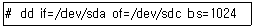
- if : 표준입력을 대신할 파일 입력을 지정한다.
- of : 표준 출력을 대신할 파일 출력을 지정한다.
- bs : 한번에 입력 및 출력할 킬로바이트(Kilo Bytes) 단위로 설정한다.
- 위 예제는 dd 명령어를 사용하여 디스크간 복제를 수행한다.
(정답률: 46%)
3과목: 네트워크 및 서비스의 활용
61. 다음 중 웹에 대한 설명으로 틀린 것은?
- 웹에서 가장 많이 사용되는 프로토콜은 HTTP이다.
- 동적인 웹 페이지 구성을 위해 CGI를 사용한다.
- HTML이 많이 사용되고 있으며, 관련 표준은 IEEE에서 주관하고 있다.
- 대표적인 웹 서버 프로그램에는 Apache 웹 서버가 있다.
(정답률: 46%)
62. 다음 HTTP 요청 메소드(Method) 중 클라이언트에서 웹서버로 데이터를 보내어 저장될 때 사용 되는 메소드로 알맞은 것은?(오류 신고가 접수된 문제입니다. 반드시 정답과 해설을 확인하시기 바랍니다.)
- GET
- POST
- HEAD
- PUT
(정답률: 38%)
63. 다음 HTTP 응답 오류 코드 중 ‘Not Found’에 해당하는 코드 번호로 알맞은 것은?
- 101
- 202
- 403
- 404
(정답률: 58%)
64. 다음에서 설명하는 데이터베이스명으로 알맞은 것은?
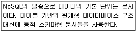
- MySQL
- MariaDB
- PostgreSQL
- MongoDB
(정답률: 46%)
65. 아파치 웹서버와 PHP 연동 상태를 확인하기 위해서 PHP 관련 정보를 출력하는 함수를 이용해서 점검 하려고 한다. 다음 ( 괄호 ) 안에 들어갈 내용으로 알맞은 것은?
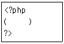
- phpinfo();
- phptest();
- testinfo();
- testphp();
(정답률: 53%)
66. 다음 중 NIS에 대한 설명으로 틀린 것은?
- NIS는 하나의 서버에서 다수의 서버에 대한 사용자 인증을 할 때 유용하다.
- Sun Microsystems사에서 개발한 것으로 초기에는 Yellow Pages라고 불렀다.
- NFS와 병행해서 구축하면 효율적인 네트워크 서버 환경을 구축할 수 있다.
- NIS는 RPC를 사용하지 않고, NIS+만 RPC를 사용한다.
(정답률: 55%)
67. 다음 설명으로 알맞은 것은?
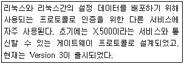
- NIS
- NFS
- LDAP
- AD
(정답률: 44%)
68. 다음 중 NIS 서버에서 각종 정보를 담고 있는 데이터베이스 맵 파일이 위치하는 디렉토리로 알맞은 것은?
- /etc/yp
- /var/yp
- /usr/yp
- /usr/local/yp
(정답률: 43%)
69. 다음 중 NIS 서버에서 사용하는 데몬으로 틀린 것은?
- ypserv
- yppasswdd
- ypxfrd
- ypbind
(정답률: 35%)
70. 다음 LDAP 속성 중 최상위 조직을 나타낼 때 사용하는 속성으로 알맞은 것은?
- o
- ou
- cn
- sn
(정답률: 46%)
71. 다음 중 삼바(Samba)에 대한 설명으로 틀린 것은?
- 삼바는 GPL 정책을 따르는 공개 소프트웨어이다.
- 삼바는 CIFS의 확장된 버전인 SMB 프로토콜을 사용한다.
- 삼바는 윈도우와 리눅스 시스템간의 프린터 공유에 사용된다.
- 삼바는 윈도우와 리눅스 시스템간의 디렉토리(또는 폴더) 공유에 사용된다.
(정답률: 37%)
72. 삼바 서버에 생성한 계정으로 인증을 거쳐야 접근이 가능하도록 설정하려고 한다. 다음 ( 괄호 ) 안에 들어갈 설정값으로 알맞은 것은?
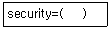
- user
- share
- server
- ads
(정답률: 48%)
73. 다음 /etc/exports 파일에 설정하는 옵션중에 root를 포함하여 모든 사용자의 권한을 nobody(또는 nfsnobody) 권한으로 변경할 때 사용하는 옵션으로 알맞은 것은?
- root_squash
- no_root_squash
- all_squash
- no_all_squash
(정답률: 39%)
74. 다음 중 NFS 클라이언트에서 192.168.12.22번 IP주소를 사용하는 NFS서버의 export항목 리스트를 확인하려고 한다. 다음 ( 괄호 ) 에 들어갈 내용으로 알맞은 것은?
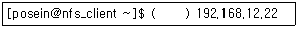
- showmount -a
- showmount -e
- exportfs -r
- exportfs -e
(정답률: 36%)
75. vsftpd 서버에서 익명(anonymous) 사용자의 로그인을 허용하지 않으려고 한다. 다음의 설정에서 알맞은 것은?
- anonymous_enable=YES
- anonymous_enable=NO
- anonymous_deny=YES
- anonymous_deny=NO
(정답률: 46%)
76. 다음 중 메일 서버에 도착한 메일을 사용자가 확인할 때 사용되는 프로토콜의 조합으로 알맞은 것은?
- SMTP, POP3
- SMTP, IMAP
- POP3, IMAP
- SMTP, MSP
(정답률: 43%)
77. 다음 중 Sendmail 서버에서 사용하는 도메인을 등록하는 파일로 알맞은 것은?
- /etc/mail/access
- /etc/mail/localhost-host-names
- /etc/mail/virtusertable
- /etc/aliases
(정답률: 42%)
78. 다음 중 /etc/aliases 파일 변경후에 실행하는 명령으로 알맞은 것은?
- makemap hash
- mailq
- newaliases
- aliases
(정답률: 42%)
79. 다음 ( 괄호 ) 안에 들어갈 파일명으로 알맞은 것은?
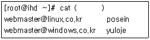
- /etc/mail/access
- /etc/mail/localhost-host-names
- /etc/mail/virtusertable
- /etc/aliases
(정답률: 26%)
80. 다음 ( 괄호 ) 안에 들어갈 명령으로 알맞은 것은?
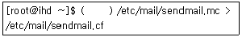
- m4
- mailq
- makemap hash
- newaliases
(정답률: 45%)
81. 다음 ( 괄호 ) 안에 들어갈 파일명으로 알맞은 것은?
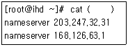
- /etc/hosts
- /etc/host.conf
- /etc/resolv.conf
- /etc/sysconfig/network
(정답률: 48%)
82. 다음은 설정된 DNS 서버 zone 파일의 일부이다. 다음 ( 괄호 )안에 들어갈 내용으로 알맞은 것은?
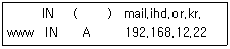
- MAIL 10
- MX
- MX 10
(정답률: 35%)
83. 다음 중 DNS 서버의 역 존(Reverse Zone) 파일에서만 사용되는 레코드로 알맞은 것은?
- A
- MX
- PTR
- CNAME
(정답률: 49%)
84. 다음 named.conf 설정 항목 중 네임 서버에 질의 할 수 있는 호스트를 지정할 때 사용하는 항목으로 알맞은 것은?
- allow-transfer
- allow-query
- forward
- forwarders
(정답률: 54%)
85. 다음 중 DNS 서버에서 사용하는 명령으로 틀린 것은?
- named-checkconf
- named-checkzone
- wget
- rndc
(정답률: 43%)
86. 다음 중 성능 향상을 위해 게스트(Guest) OS의 수정이 반드시 필요한 가상화 기술로 알맞은 것은?
- 전가상화
- 반가상화
- OS 레벨 가상화
- 애플리케이션 가상화
(정답률: 40%)
87. 다음 중 리눅스 가상화 기술인 XEN에 대한 설명 으로 틀린 것은?
- XEN은 베어메탈(Bare Metal)방식의 하이퍼 바이저이다.
- XEN은 전가상화 및 반가상화를 모두 지원한다.
- XEN은 반가상화를 위해 QEMU 방식을 사용한다.
- XEN은 Domain 0이라는 컨트롤 스택을 사용한다.
(정답률: 36%)
88. 다음 그림과 같이 가상머신 관리자를 실행하기 위한명령으로 알맞은 것은?
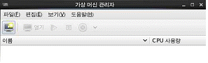
- libvirt
- libvirt-client
- virt-manager
- oVirt
(정답률: 51%)
89. 다음 중 리눅스 기반 가상화 구축후에 실행해야 하는데몬으로 알맞은 것은?
- libvirtd
- virt-viewer
- virt-manager
- libvirt-client
(정답률: 48%)
90. 다음 중명령행 기반으로 가상 머신을 관리할 때 사용하는 명령으로 알맞은 것은?
- libvirt
- virsh
- virt-manager
- sar
(정답률: 39%)
91. 다음 중 xinetd 서비스 및 Standalone 서비스에 대한설명으로 틀린 것은?
- xinetd 관련 서비스는 stanalone 서비스와 비교 해서자원 사용이 효율적이다.
- xinetd 관련 서비스는 stanalone 서비스와 비교 해서 상대적으로 실행이 빠르다.
- xinetd 서비스는 tcp _wrapper에 의해 접근 제어된다.
- standalone 서비스는 항상 메모리에 상주에 있으면서 실행된다.
(정답률: 44%)
92. 다음 xinetd 환경설정에 사용되는 속성중 초당 접속요구수가 일정 수치 이상일 때 일정시간 동안 해당 서비스를 비활성 시키는 설정으로 알맞은 것은?
- cps
- per_source
- instance
- no_access
(정답률: 36%)
93. 다음 squid 프록시 서버 설정 항목 중에 포트를 지정하는 항목으로 알맞은 것은?
- port
- proxy_port
- http_port
- squid_port
(정답률: 35%)
94. 다음 DHCP 설정 항목 중에 게이트웨이 주소를 지정하는 항목으로 알맞은 것은?
- option gateway
- option routers
- option servers
- option domains
(정답률: 40%)
95. 다음 중 NTP 서버의 계층 구조에서 계급을 지칭 하는 용어로 알맞은 것은?
- class
- rank
- stratum
- level
(정답률: 36%)
96. 다음중 DoS 공격에 대한 설명으로 틀린 것은?
- 루트 권한을 획득하는 공격이 아니다.
- 데이터를 파괴, 변조, 훔쳐가는 것을 목적으로 하는 공격이다.
- 내부에서의 공격법에는 디스크 채우기, 메모리 고갈등이 있다.
- 외부에서의 공격법에는 Mail Storm, 네트워크 트래픽증가 등이 있다.
(정답률: 48%)
97. 다음 설명하는 내용으로 알맞은 것은?
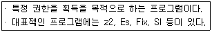
- 웜
- 바이러스
- 루트킷
- 트로이목마
(정답률: 50%)
98. 다음 설명하는 내용으로 알맞은 것은?
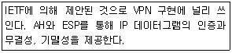
- L2TP
- IPsec
- SOCKS V5
- NAT
(정답률: 44%)
99. 다음 중 스니핑(Sniffing)을 방지하기 위해 가장 효과적인 방법으로 알맞은 것은?
- SSL, PGP 등을 이용한 데이터 암호화
- iptables를 이용한 방화벽 구축
- snort를 이용한 침입탐지시스템 구축
- tcp_wrapper를 이용한 접근제어시스템 구축
(정답률: 42%)
100. 다음 중 ( 괄호 )안에 들어갈 내용으로 알맞은 것은?
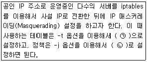
- (ㄱ) nat - (ㄴ) SNAT
- (ㄱ) nat - (ㄴ) DNAT
- (ㄱ) mangle - (ㄴ) SNAT
- (ㄱ) mangle - (ㄴ) DNAT
(정답률: 39%)